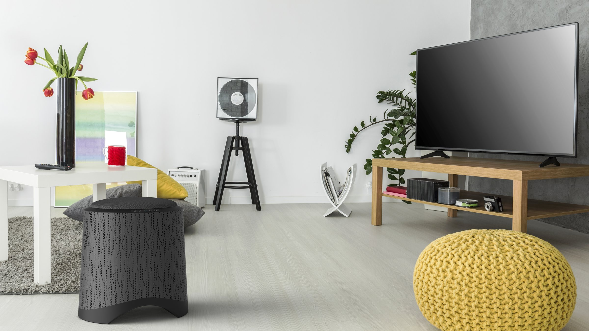
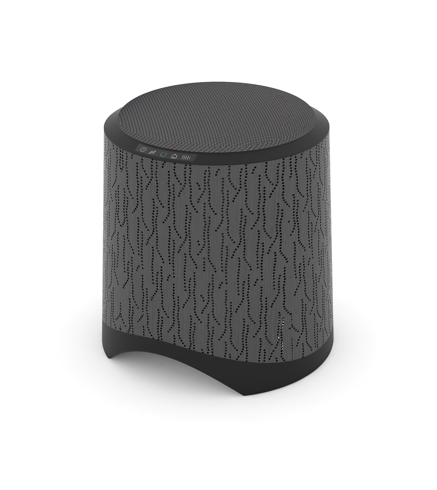
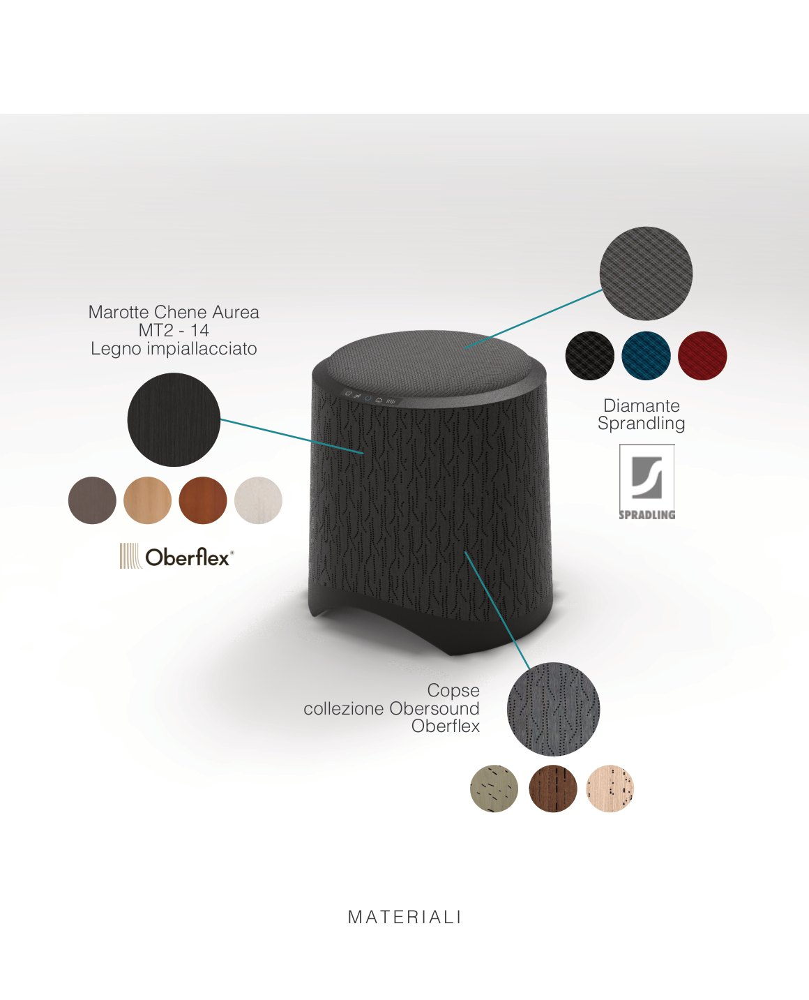
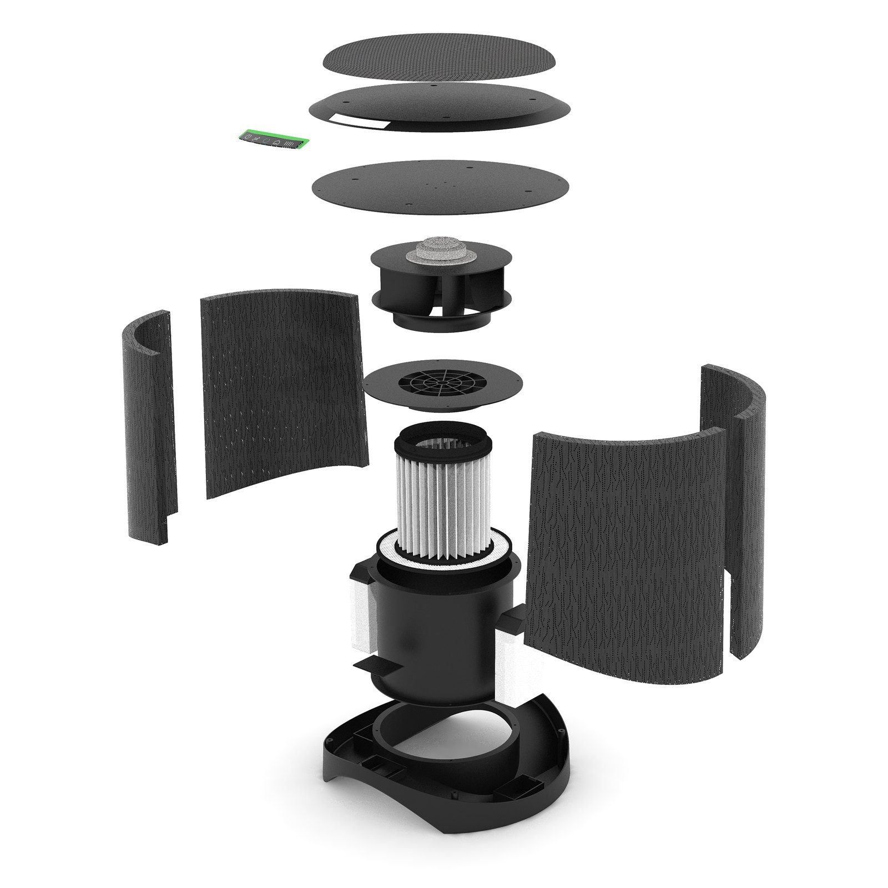
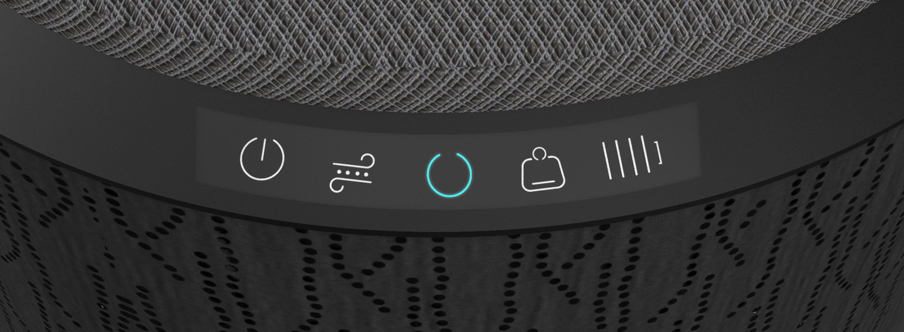
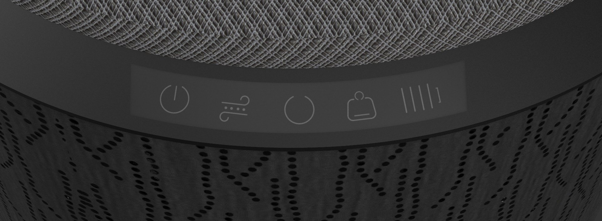
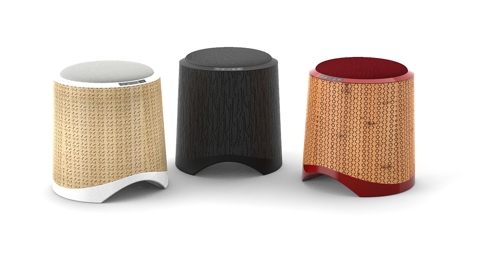
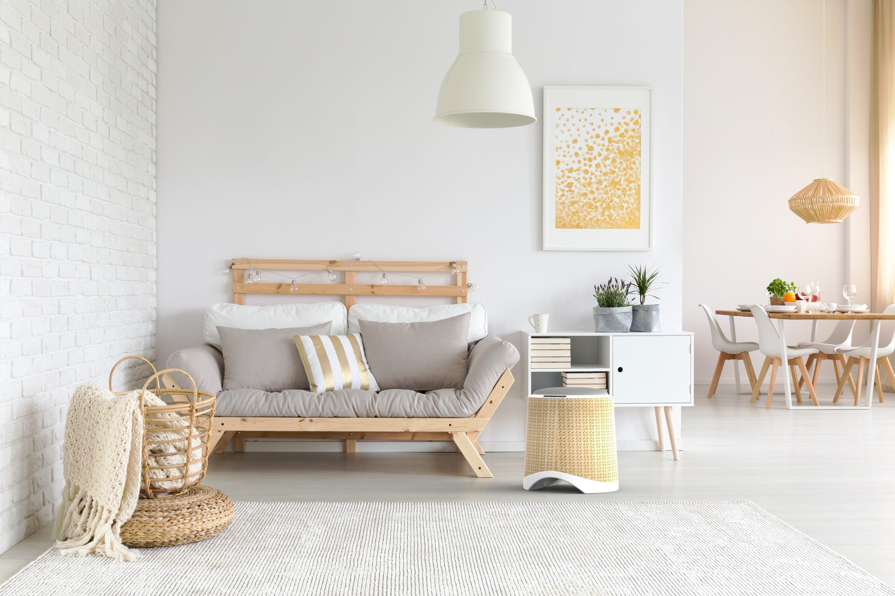
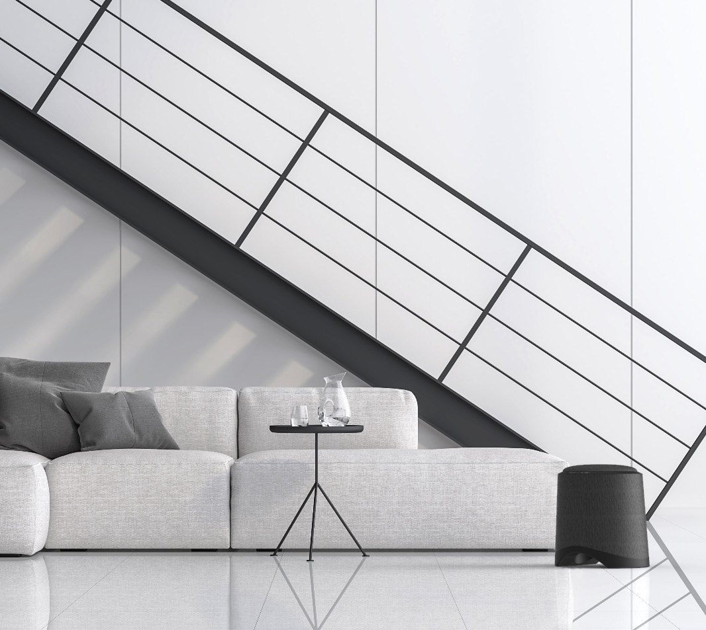
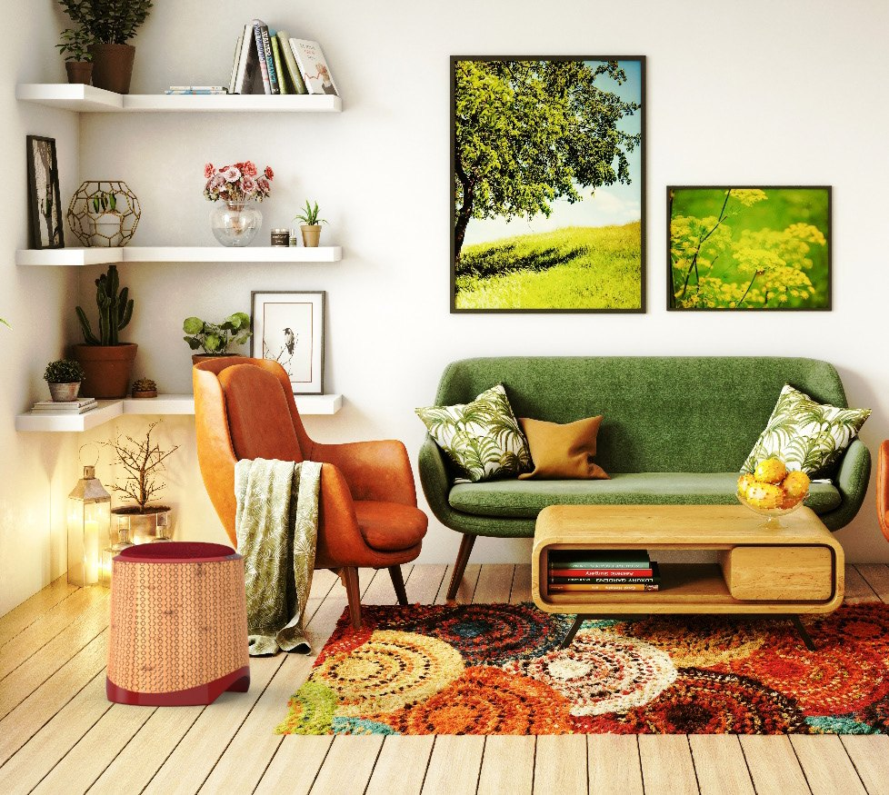

Chilling at Home
Il purificatore che diventa seduta e non fa rumore: la mia tesi di laurea al Politecnico di Milano per IMETEC, poi presa in esame dall’azienda come progetto da studiare.


01 — Due oggetti in uno
Una ventola centrifuga aspira l’aria dal basso e la restituisce pulita attraverso i fori della scocca. Sopra, ci si siede.

02 — Silenzioso
La scocca è un pannello Oberflex a tre strati forati: legno, MDF e feltro. Assorbe il rumore della ventola invece di amplificarlo.


03 — La serie
Tre finiture per tre case: Soft light, Today e Old time.



